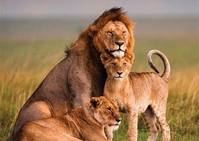

SAFARI GO
If Traveling, Give Us A Go.
Not so safe but will risk my life to save you.(Optional)
.jpg)
Elephants are the largest terrestrial animals that are found in the dense forests of Asia and Africa. Elephants are wild animals that are always found in herds. They are very intelligent and social animals. They never leave their herds, and if any one member is lost, they give all their efforts to find the missing friend. Elephants have huge black bodies with tiny tails. Elephants have two small and beautiful eyes and two big ears which keep moving like big fans. The legs of elephants are like pillars of a building, and the most interesting part is their trunk which helps them in drinking water, bathing, eating, smelling, etc. They can pick heavy logs and push and break trees with the help of the trunk. They are considered to be very faithful and friendly animals to human beings.
.jpg)
fox, any of various members of the dog family (Canidae) resembling small to medium-sized bushy-tailed dogs with long fur, pointed ears, and a narrow snout. In a restricted sense, the name refers to the 10 or so species classified as “true” foxes (genus Vulpes), especially the red, or common, fox (V. vulpes), which lives in both the Old World and the New World. Several other foxes belong to genera other than Vulpes, including the North American gray fox, five species of South American fox, the Arctic fox (including the blue fox), the bat-eared fox, and the crab-eating fox.
.jpg)
The Indian leopard has strong legs and a long, well-formed tail, broad muzzle, short ears, small, yellowish-grey eyes, and light-grey ocular bulbs.Its coat is spotted and rosetted on a pale yellow to yellowish-brown or golden background, except for the melanistic forms; the spots fade toward the white underbelly and the insides and lower parts of the legs. Rosettes are most prominent on the back, flanks and hindquarters. The pattern of the rosettes is unique to each individual. Juveniles have woolly fur, and appear dark due to the densely arranged spots. The white-tipped tail is 60–100 cm (24–39 in) long, white underneath, and displays rosettes, which form incomplete bands toward the end. The rosettes are larger in other leopard subspecies in Asia. Fur colour tends to be more pale and cream in arid habitats, more grey in colder climates, and of a darker golden hue in rainforest habitats. The clouded leopard can be told apart by its diffuse "clouds" of spots compared to the smaller and distinct rosettes of the leopard, longer legs and thinner tail.
.jpg)
The red panda, also known as the lesser panda, is a small mammal native to the eastern Himalayas and southwestern China. It is slightly larger than a domestic cat with a bear-like body and thick russet fur. The belly and limbs are black, and there are white markings on the side of the head and above its small eyes. Red pandas are very skillful and acrobatic animals that predominantly stay in trees. They subsist mainly on bamboo and other vegetation, fruits, and insects3.

The lion is a well-muscled cat with a long body, large head, and short legs. Size and appearance vary considerably between the sexes. The male’s outstanding characteristic is his mane, which varies between different individuals and populations. It may be entirely lacking; it may fringe the face; or it may be full and shaggy, covering the back of the head, neck, and shoulders and continuing onto the throat and chest to join a fringe along the belly. In some lions the mane and fringe are very dark, almost black, giving the cat a majestic appearance. Manes make males look larger and may serve to intimidate rivals or impress prospective mates. A full-grown male is about 1.8–2.1 metres (6–7 feet) long, excluding the 1-metre tail; he stands about 1.2 metres high at the shoulder and weighs 170–230 kg (370–500 pounds). The female, or lioness, is smaller, with a body length of 1.5 metres, a shoulder height of 0.9–1.1 metres, and a weight of 120–180 kg. The lion’s coat is short and varies in colour from buff yellow, orange-brown, or silvery gray to dark brown, with a tuft on the tail tip that is usually darker than the rest of the coat.